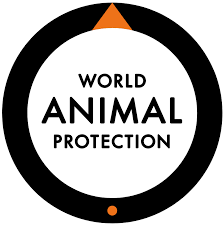

World animal protection
Somos World Animal Protection. Nuestra misión es acabar con la crueldad y el sufrimiento animal. Para siempre. La evidencia demuestra que los animales son seres individuales y sintientes, capaces de sentir dolor, miedo y alegría. Sin embargo, cada día, miles de millones de ellos sufren una crueldad insoportable. Poner a los animales en primer lugar no solo es mejor para ellos, sino que es esencial para nosotros y para nuestro planeta compartido. Descubre lo que podemos hacer, con tu apoyo, para poner fin a la crueldad y la explotación de los animales de granja y de la vida silvestre. Conocidos como la World Society for the Protection of Animals (WSPA) durante 30 años, cambiamos nuestro nombre en 2014 para evolucionar nuestra marca junto con nuestra misión. El nombre World Animal Protection demuestra quiénes somos y qué defendemos, de forma clara y sencilla.